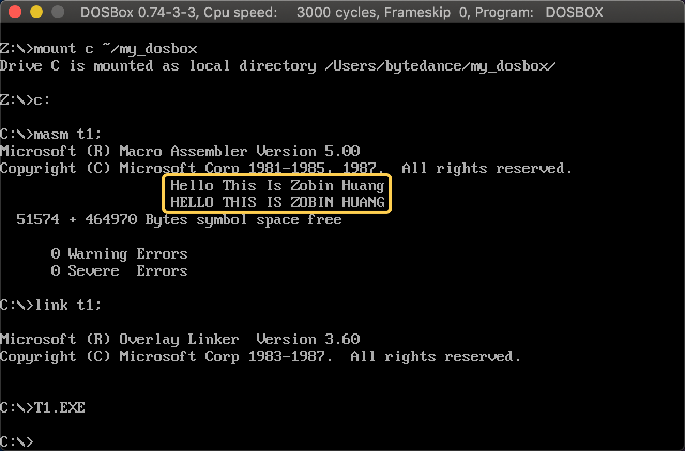
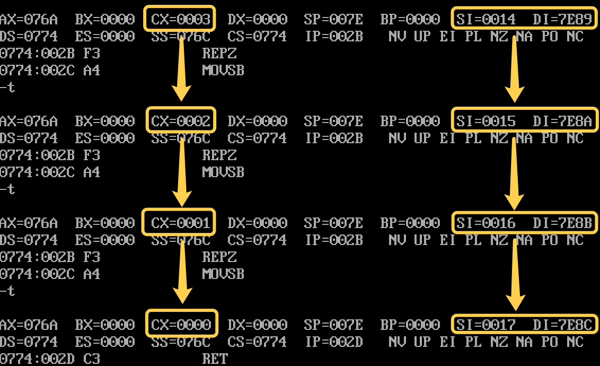

<!DOCTYPE html>
<html lang="en">
<head>
  <meta charset="UTF-8">
<meta name="viewport" content="width=device-width, initial-scale=1, maximum-scale=2">
<meta name="theme-color" content="#222">
<meta name="generator" content="Hexo 5.3.0">
  <link rel="apple-touch-icon" sizes="180x180" href="/images/apple-touch-icon-next.png">
  <link rel="icon" type="image/png" sizes="32x32" href="/images/favicon-32x32-next.png">
  <link rel="icon" type="image/png" sizes="16x16" href="/images/favicon-16x16-next.png">
  <link rel="mask-icon" href="/images/logo.svg" color="#222">

<link rel="stylesheet" href="/css/main.css">

<link rel="stylesheet" href="//fonts.googleapis.com/css?family=Exo 2:300,300italic,400,400italic,700,700italic|Caveat:300,300italic,400,400italic,700,700italic&display=swap&subset=latin,latin-ext">
<link rel="stylesheet" href="/lib/font-awesome/css/all.min.css">

<script id="hexo-configurations">
    var NexT = window.NexT || {};
    var CONFIG = {"hostname":"zobinhuang.github.io","root":"/","scheme":"Pisces","version":"7.8.0","exturl":false,"sidebar":{"position":"left","width":180,"display":"post","padding":10,"offset":12,"onmobile":false},"copycode":{"enable":true,"show_result":true,"style":null},"back2top":{"enable":true,"sidebar":true,"scrollpercent":true},"bookmark":{"enable":false,"color":"#222","save":"auto"},"fancybox":false,"mediumzoom":false,"lazyload":false,"pangu":false,"comments":{"style":"tabs","active":null,"storage":true,"lazyload":false,"nav":null},"algolia":{"hits":{"per_page":10},"labels":{"input_placeholder":"Search for Posts","hits_empty":"We didn't find any results for the search: ${query}","hits_stats":"${hits} results found in ${time} ms"}},"localsearch":{"enable":false,"trigger":"auto","top_n_per_article":1,"unescape":false,"preload":false},"motion":{"enable":true,"async":false,"transition":{"post_block":"fadeIn","post_header":"slideDownIn","post_body":"slideDownIn","coll_header":"slideLeftIn","sidebar":"slideUpIn"}}};
  </script>

  <meta name="description" content="img{margin-left: 20px; margin-right: 20px;}     #table th{text-align:center;}     #table td{text-align:center;}     p{margin-left: 15px; margin-right: 15px;}     .div_concurrent_img{padding: 10p">
<meta property="og:type" content="website">
<meta property="og:title" content="标志位寄存器">
<meta property="og:url" content="https://zobinhuang.github.io/sec_learning_backup/Tech_OS_And_Linux_Kernel/Assembly_Basic_6_Flag_Register/index.html">
<meta property="og:site_name" content="Zobin">
<meta property="og:description" content="img{margin-left: 20px; margin-right: 20px;}     #table th{text-align:center;}     #table td{text-align:center;}     p{margin-left: 15px; margin-right: 15px;}     .div_concurrent_img{padding: 10p">
<meta property="og:locale" content="en_US">
<meta property="og:image" content="https://i.creativecommons.org/l/by-nc-nd/4.0/88x31.png">
<meta property="og:image" content="https://zobinhuang.github.io/sec_learning_backup/Tech_OS_And_Linux_Kernel/Assembly_Basic_6_Flag_Register/pic/xxx.png">
<meta property="og:image" content="https://zobinhuang.github.io/sec_learning_backup/Tech_OS_And_Linux_Kernel/Assembly_Basic_6_Flag_Register/pic/je_jb_ja.png">
<meta property="og:image" content="https://zobinhuang.github.io/sec_learning_backup/Tech_OS_And_Linux_Kernel/Assembly_Basic_6_Flag_Register/pic/movsb.png">
<meta property="article:published_time" content="2022-02-10T14:39:09.880Z">
<meta property="article:modified_time" content="2021-09-07T12:09:29.000Z">
<meta property="article:author" content="Zhuobin Huang">
<meta property="article:tag" content="Zobin">
<meta property="article:tag" content="黄卓彬">
<meta property="article:tag" content="zobinHuang">
<meta property="article:tag" content="网络工程">
<meta property="article:tag" content="Networking Engineering">
<meta name="twitter:card" content="summary">
<meta name="twitter:image" content="https://i.creativecommons.org/l/by-nc-nd/4.0/88x31.png">

<link rel="canonical" href="https://zobinhuang.github.io/sec_learning_backup/Tech_OS_And_Linux_Kernel/Assembly_Basic_6_Flag_Register/">


<script id="page-configurations">
  // https://hexo.io/docs/variables.html
  CONFIG.page = {
    sidebar: "",
    isHome : false,
    isPost : false,
    lang   : 'en'
  };
</script>

  <title>标志位寄存器 | Zobin
</title>
  


  <noscript>
  <style>
  .use-motion .brand,
  .use-motion .menu-item,
  .sidebar-inner,
  .use-motion .post-block,
  .use-motion .pagination,
  .use-motion .comments,
  .use-motion .post-header,
  .use-motion .post-body,
  .use-motion .collection-header { opacity: initial; }

  .use-motion .site-title,
  .use-motion .site-subtitle {
    opacity: initial;
    top: initial;
  }

  .use-motion .logo-line-before i { left: initial; }
  .use-motion .logo-line-after i { right: initial; }
  </style>
</noscript>

<link rel="alternate" href="/atom.xml" title="Zobin" type="application/atom+xml">
</head>

<body itemscope itemtype="http://schema.org/WebPage">
  <div class="container use-motion">
    <div class="headband"></div>

    <header class="header" itemscope itemtype="http://schema.org/WPHeader">
      <div class="header-inner"><div class="site-brand-container">
  <div class="site-nav-toggle">
    <div class="toggle" aria-label="Toggle navigation bar">
      <span class="toggle-line toggle-line-first"></span>
      <span class="toggle-line toggle-line-middle"></span>
      <span class="toggle-line toggle-line-last"></span>
    </div>
  </div>

  <div class="site-meta">

    <a href="/" class="brand" rel="start">
      <span class="logo-line-before"><i></i></span>
      <h1 class="site-title">Zobin</h1>
      <span class="logo-line-after"><i></i></span>
    </a>
      <p class="site-subtitle" itemprop="description">Lovin' Tech with Tea</p>
  </div>

  <div class="site-nav-right">
    <div class="toggle popup-trigger">
    </div>
  </div>
</div>


<nav class="site-nav">
  <ul id="menu" class="main-menu menu">
        <li class="menu-item menu-item-home">

    <a href="/" rel="section"><i class="fa fa-home fa-fw"></i>Home</a>

  </li>
        <li class="menu-item menu-item-about-me-(关于我)">

    <a href="/sec_about/" rel="section"><i class="fa fa-user fa-fw"></i>About Me (关于我)</a>

  </li>
        <li class="menu-item menu-item-library-(知识库)">

    <a href="/sec_learning" rel="section"><i class="fa fa-duotone fa-book fa-fw"></i>Library (知识库)</a>

  </li>
        <li class="menu-item menu-item-music-(独立音乐人)">

    <a href="/sec_music" rel="section"><i class="fa fa-music fa-fw"></i>Music (独立音乐人)</a>

  </li>
  </ul>
</nav>


</div>
    </header>

    
  <div class="reading-progress-bar"></div>


    <main class="main">
      <div class="main-inner">
        <div class="content-wrap">
          
  
  

          <div class="content page posts-expand">
            

    
    
    
    <div class="post-block" lang="en">
      <header class="post-header">

<h1 class="post-title" itemprop="name headline">标志位寄存器
</h1>

<div class="post-meta">
  
  <ul class="breadcrumb">
          
            <li><a href="/sec_learning_backup/">SEC_LEARNING_BACKUP</a></li>
            <li><a href="/sec_learning_backup/Tech_OS_And_Linux_Kernel/">TECH_OS_AND_LINUX_KERNEL</a></li>
          <li>ASSEMBLY_BASIC_6_FLAG_REGISTER</li>
        
  </ul>

</div>

</header>

      
      
      
      <div class="post-body">
          <head>
<style>
    img{margin-left: 20px; margin-right: 20px;}
    #table th{text-align:center;}
    #table td{text-align:center;}
    p{margin-left: 15px; margin-right: 15px;}
    .div_concurrent_img{padding: 10px 10px; display: flex; align-items:center; justify-content:center;}
    @media(max-width: 768px) {
      .div_concurrent_img{flex-direction: column;}
    }
    .div_catalogue{padding: 10px 10px; font-size: 16px; background-color: #E0E0E0; word-spacing:0px;  border:1px solid black; border-radius: 10px;}
    .div_licence{font-size: 16px; word-spacing:0px; border:1px solid black;}
    .div_learning_post{font-size: 16px; word-spacing:0px;}
    .div_indicate_source{font-size: 18px; word-spacing:0px; background-color: #E0E0E0;}
    .div_learning_post_boder{padding: 10px 10px; font-size: 16px; word-spacing:0px;  border:1px solid black;}
</style>

<!--支持网页公式显示-->    
<script type="text/javascript" src="https://cdn.mathjax.org/mathjax/latest/MathJax.js?config=AM_HTMLorMML-full"></script>
<!--支持矩阵显示-->
<script type="text/javascript">
  run_maths = function() {
    if (document.querySelector('[class*="cmath"]') !== null) {
      if (typeof (mjax_path)=='undefined') { mjax_path='https://cdn.jsdelivr.net/npm/mathjax@2'; }
      if (typeof (mjax_config)=='undefined') { mjax_config='AM_CHTML'; }
      smjax = document.createElement ('script');
      smjax.setAttribute('src',`${mjax_path}/MathJax.js?config=${mjax_config}`);
      smjax.setAttribute('async',true);
      document.getElementsByTagName('head')[0].appendChild(smjax);
    }
  };
  if (document.readyState === 'loading') {  
    window.addEventListener('DOMContentLoaded', run_maths); 
  } else { 
    run_maths(); 
  }
</script>
</head>

<body>

<div align="center" class="div_indicate_source">
  <h4>⚠ 转载请注明出处：<font color="red"><i>作者：ZobinHuang，更新日期：July 16 2021</i></font></h4>
</div>

<div class="div_licence">
  <br>
  <div align="center">
      <a rel="license noopener" target="_blank" href="http://creativecommons.org/licenses/by-nc-nd/4.0/"></a>
  </div>
  <p>
  &nbsp;&nbsp;&nbsp;&nbsp;本<span xmlns:dct="http://purl.org/dc/terms/" href="http://purl.org/dc/dcmitype/Text" rel="dct:type">作品</span>由 <span xmlns:cc="http://creativecommons.org/ns#" property="cc:attributionName"><b>ZobinHuang</b></span> 采用 <a rel="license noopener" target="_blank" href="http://creativecommons.org/licenses/by-nc-nd/4.0/"><font color="red">知识共享署名-非商业性使用-禁止演绎 4.0 国际许可协议</font></a> 进行许可，在进行使用或分享前请查看权限要求。若发现侵权行为，会采取法律手段维护作者正当合法权益，谢谢配合。
  </p>
</div>

<!--表格-->
<!--
<table border="1" align="center" bgcolor="#FFFFFF">
  <caption>表格</caption>
  <tr>
    <th>A</th>
    <th>B</th>
    <th>C</th>
  </tr>
  <tr>
    <td>xxx</td>
    <td>xxx</td>
    <td>xxx</td>
  </tr>
</table>
-->

<!--矩阵公式-->
<!--
<div class="cmath" align="center">
  `((1, 0),(1, 0))`
</div>
-->

<!--图片-->
<!--
<div align="center">
  
</div>
-->

<!--正文-->
<!--
<p>
&nbsp;&nbsp;&nbsp;&nbsp;公式：<span>`\overline{A}\overline{B}`</span>
</p>
-->

<br>

<div class="div_catalogue">
  <div align="center">
    <h2> 目录 </h2>
    <p>
    <font size="2px">有特定需要的内容直接跳转到相关章节查看即可。</font>
  </div>
  <div class="div_learning_post_boder">
    <p>
    &nbsp;&nbsp;&nbsp;&nbsp;Section 1. <a href="#1_flag"><font color="blue"><b>标志位寄存器</b></font></a>：介绍了 8086 CPU 的标志位寄存器的作用和状态
    <p>
    &nbsp;&nbsp;&nbsp;&nbsp;Section 2. <a href="#2_adc"><font color="blue"><b>adc 指令</b></font></a>：介绍了用于传递进位的 adc 指令
    <p>
    &nbsp;&nbsp;&nbsp;&nbsp;Section 3. <a href="#3_sbb"><font color="blue"><b>sbb 指令</b></font></a>：介绍了用于传递借位的 sbb 指令
    <p>
    &nbsp;&nbsp;&nbsp;&nbsp;Section 4. <a href="#4_cmp"><font color="blue"><b>cmp 指令</b></font></a>：介绍了用于比较的 cmp 指令
    <br>&nbsp;&nbsp;&nbsp;&nbsp;&nbsp;&nbsp;&nbsp;&nbsp;4.1 <a href="#4_cmp_1"><font color="blue">无符号数的比较</font></a>：介绍了无符号数下 cmp 指令的输出结果
    <br>&nbsp;&nbsp;&nbsp;&nbsp;&nbsp;&nbsp;&nbsp;&nbsp;4.2 <a href="#4_cmp_2"><font color="blue">有符号数的比较</font></a>：介绍了有符号数下 cmp 指令的输出结果
    <p>
    &nbsp;&nbsp;&nbsp;&nbsp;Section 5. <a href="#5_je"><font color="blue"><b>基于标志位寄存器的条件转移指令</b></font></a>：介绍了基于标志位寄存器的条件转移指令 je, jb, jnb, ja, jna
    <p>
    &nbsp;&nbsp;&nbsp;&nbsp;Section 6. <a href="#6_df"><font color="blue"><b>串传送指令</b></font></a>：介绍了串传送指令以及 DF 寄存器的作用
    <p>
    &nbsp;&nbsp;&nbsp;&nbsp;Section 7. <a href="#7_pushf_popf"><font color="blue"><b>pushf 和 popf</b></font></a>：简单介绍了压栈/出栈标志位寄存器的 pushf 和 popf 指令
  </div>
</div>

<!--标题-->
<h2><a name="1_flag">1. 标志位寄存器</a></h2>
<div class="div_learning_post">

  <table border="1" align="center" bgcolor="#FFFFFF">
    <tr>
      <th>bit 序号</th>
      <th>F</th>
      <th>E</th>
      <th>D</th>
      <th>C</th>
      <th>B</th>
      <th>A</th>
      <th>9</th>
      <th>8</th>
      <th>7</th>
      <th>6</th>
      <th>5</th>
      <th>4</th>
      <th>3</th>
      <th>2</th>
      <th>1</th>
      <th>0</th>
    </tr>
    <tr>
      <td>寄存器位</td>
      <td> </td>
      <td> </td>
      <td> </td>
      <td> </td>
      <td>OF</td>
      <td>DF</td>
      <td>IF</td>
      <td>TF</td>
      <td>SF</td>
      <td>ZF</td>
      <td> </td>
      <td>AF</td>
      <td> </td>
      <td>PF</td>
      <td> </td>
      <td>CF</td>
    </tr>
  </table>

  <p>
  &nbsp;&nbsp;&nbsp;&nbsp;在 8086 CPU 中，有一个特殊的 16-bits 寄存器：标志位寄存器。标志位寄存器中的某些位有特殊的含义，如上所示，它们主要是用于给出一些<font color="blue">针对计算指令 (e.g. add, sub. div, mul)</font> 的信号。我们列举如下所示：

  <table border="1" align="center" bgcolor="#FFFFFF">
    <tr>
      <th>标志位寄存器位</th>
      <th>真值</th>
      <th>假值</th>
      <th width=38%>含义</th>
    </tr>
    <tr>
      <td>CF<br>(Carry Flag 进位标志位)</td>
      <td>CY<br>(Carry Yes)</td>
      <td>NC<br>(Not Carry)</td>
      <td>
      CF 把运算结果都当作 <font color="blue"><b>无符号数</b></font>，它会记录运算结果的最高有效位向更高位的进位值 (add)，或者从更高位的借位值 (sub)
      </td>
    </tr>
    <tr>
      <td>ZF<br>(Zero Flag 零标志位)</td>
      <td>ZR<br>(Zero)</td>
      <td>NZ<br>(Not Zero)</td>
      <td>
      ZF 用于记录相关运算指令执行之后，其结果是否为 0 的标志
      </td>
    </tr>
    <tr>
      <td>PF<br>(Parity Flag 奇偶标志位)</td>
      <td>PE<br>(Parity Even)</td>
      <td>PO<br>(Parity Odd)</td>
      <td>
      PF 用于记录相关指令执行后，运算结果中所有的 bit 位的 1 的奇偶性。若有偶数位为 1 则 PF 为真；若有奇数位为 1 则 PF 为假。
      </td>
    </tr>
    <tr>
      <td>SF<br>(Sign Flag 符号标志位)</td>
      <td>NG<br>(Negative)</td>
      <td>PL<br>(Plus)</td>
      <td>
      SF 把运算结果都当作 <font color="blue"><b>有符号数</b></font>。它用于记录相关指令执行后，运算结果的正负情况。若计算结果为负，则 SF 为真；若计算结果为正，则 SF 为假。
      </td>
    </tr>
    <tr>
      <td>OF<br>(Overflow Flag 溢出标志位)</td>
      <td>NG<br>(Negative)</td>
      <td>PL<br>(Plus)</td>
      <td>
      OF 把运算结果都当作 <font color="blue"><b>有符号数</b></font>。如果计算结果超过了用于存储数据的 8 位寄存器/内存单元的表示范围 (-128~127) 或者 16位寄存器/内存单元的表示范围 (-32768~32767)，则说明运算溢出。如果发生了溢出，则 OF 为真；如果没有发生溢出，则 OF 为假。
      </td>
    </tr>
    <tr>
      <td>DF<br>(Direction Flag 方向标志位)</td>
      <td>UP<br>(Up)</td>
      <td>DW<br>(Down)</td>
      <td>
      在串传送指令中，控制 SI 寄存器和 DI 寄存器的增长方向，详见 <a href="#6_df">串传送指令</a>
      </td>
    </tr>
  </table>

  <p>
  &nbsp;&nbsp;&nbsp;&nbsp;在上面这个表中我们发现，有些标志寄存器把运算结果当作有符号数，有些标志位寄存器则把运算结果当作无符号数，这显得有些困惑，这里我们解释一下。首先，如何看待运算结果，这是程序员自己决定的。我们完全可以把 10000001B 当作 129 来看待，也可以当作 -127(补码) 来看待。当我们把运算结果当作无符号数时，关心 CF 寄存器位就是有意义的；当我们把运算结果当作有符号数时，关心 SF，OF 寄存器就是有意义的。<font color="red">计算机二进制底层设计中最神奇的一点就是，不论我们怎么看待数据，不管我们认为一个数是有符号数还是无符号数，ALU (算数逻辑单元) 都能够计算出我们对有无符号设定下的正确的结果。</font>
  </div>

<h2><a name="2_adc">2. adc 指令</a></h2>
<div class="div_learning_post">
  <p>
  &nbsp;&nbsp;&nbsp;&nbsp;adc (add carry) 指令与 add 指令的区别就在于它会自动地加上 CF 寄存器位的值，adc ax, bx 即 ax + bx + CF。CF 寄存器位在这里的含义是加法进位的意思，其值是由先前的一条加法指令决定的，也就是说 adc 指令可以用于延续先前的一条加法计算，也就是传递进位的功能。如下所示，我们使用 adc 命令实现了对 1EF0001000H + 2010001EF0H 的计算。

  <figure class="highlight x86asm"><table><tr><td class="gutter"><pre><span class="line">1</span><br><span class="line">2</span><br><span class="line">3</span><br><span class="line">4</span><br><span class="line">5</span><br><span class="line">6</span><br><span class="line">7</span><br></pre></td><td class="code"><pre><span class="line"><span class="keyword">mov</span> <span class="built_in">ax</span>, <span class="number">001EH</span></span><br><span class="line"><span class="keyword">mov</span> <span class="built_in">bx</span>, <span class="number">F000H</span></span><br><span class="line"><span class="keyword">mov</span> <span class="built_in">cx</span>, <span class="number">1000H</span></span><br><span class="line"></span><br><span class="line"><span class="keyword">add</span> <span class="built_in">cx</span>, <span class="number">1EF0H</span></span><br><span class="line"><span class="keyword">adc</span> <span class="built_in">bx</span>, <span class="number">1000H</span></span><br><span class="line"><span class="keyword">adc</span> <span class="built_in">ax</span>, <span class="number">0020H</span></span><br></pre></td></tr></table></figure>
</div>

<h2><a name="3_sbb">3. sbb 指令</a></h2>
<div class="div_learning_post">
  <p>
  &nbsp;&nbsp;&nbsp;&nbsp;sbb 指令与 sub 指令的区别就在于它会自动减掉 CF 寄存器位的值，sbb ax, bx 即 ax - bx - 1。CF 寄存器位在这里的含义是减法借位的意思，其值也是由先前的一条减法指令决定的，也就是说 sbb 指令可以用于延续先前的一条减法计算，也就是传递借位的功能。如下所示，我们使用 sbb 命令实现了对 003E1000H - 00202000H 的计算。

  <figure class="highlight x86asm"><table><tr><td class="gutter"><pre><span class="line">1</span><br><span class="line">2</span><br><span class="line">3</span><br><span class="line">4</span><br><span class="line">5</span><br></pre></td><td class="code"><pre><span class="line"><span class="keyword">mov</span> <span class="built_in">bx</span>, <span class="number">1000H</span></span><br><span class="line"><span class="keyword">mov</span> <span class="built_in">ax</span>, <span class="number">003EH</span></span><br><span class="line"></span><br><span class="line"><span class="keyword">sub</span> <span class="built_in">bx</span>, <span class="number">2000H</span></span><br><span class="line"><span class="keyword">sbb</span> <span class="built_in">ax</span>, <span class="number">0020H</span></span><br></pre></td></tr></table></figure>
</div>

<h2><a name="4_cmp">4. cmp 指令</a></h2>
<div class="div_learning_post">
  <p>
  &nbsp;&nbsp;&nbsp;&nbsp;cmp 指令用于比较两个操作数的大小关系，并最终把结果呈现在标志位寄存器中。cmp 指令的运行过程实质上就是把两个操作数进行相减。

  <p>
  &nbsp;&nbsp;&nbsp;&nbsp;下面我们分别分析有符号数和无符号数的情况下 cmp 输出的标志位的含义。再次强调，这里的有符号数和无符号数，是从程序员的角度出发的，当我们把操作数看作无符号数的时候，我们就应该去那些能够体现无符号数运算结果的标志位中提取信息，反之我们就应该去那些能够体现有符号数运算结果的标志位中提取信息。

  <h3><a name="4_cmp_1">4.1 无符号数的比较</a></h3>
  <p>
  &nbsp;&nbsp;&nbsp;&nbsp;无符号数的比较较为简单，如下所示：

  <table border="1" align="center" bgcolor="#FFFFFF">
    <tr>
      <th>大小关系</th>
      <th>cmp (减法) 关系</th>
      <th>标志位寄存器输出</th>
    </tr>
    <tr>
      <td>ax = bx</td>
      <td>ax - bx = 0</td>
      <td>ZF = 1</td>
    </tr>
    <tr>
      <td>ax `\ne` bx</td>
      <td>ax - bx `\ne` 0</td>
      <td>ZF = 0</td>
    </tr>
    <tr>
      <td>ax < bx</td>
      <td>ax - bx < 0</td>
      <td>减法将产生借位，故 CF = 1</td>
    </tr>
    <tr>
      <td>ax `\leq` bx</td>
      <td>ax - bx `\leq` 0</td>
      <td>减法可能产生借位，又有可能减法为 0，故 ZF = 1 或 CF = 1</td>
    </tr>
    <tr>
      <td>ax > bx</td>
      <td>ax - bx > 0</td>
      <td>减法不可能有借位，结果也不可能为 0，故 ZF = 0 且 CF = 0</td>
    </tr>
    <tr>
      <td>ax `\geq` bx</td>
      <td>ax - bx `\geq` 0</td>
      <td>减法不必产生借位，故 CF = 0</td>
    </tr>
  </table>

  <h3><a name="4_cmp_2">4.2 有符号数的比较</a></h3>
  <p>
  &nbsp;&nbsp;&nbsp;&nbsp;当我们把数据看作是有符号数时，我们必须明确，输入输出此时都得当作有符号数来看待，且输出的数有可能超出了当前有符号数的表示范围。有符号数的比较会稍微复杂一点，其原因我们通过一个例子来理解：

  <p>
  &nbsp;&nbsp;&nbsp;&nbsp;考虑比较 22H(十进制：34) 和 A0H(十进制：-96)。对于实际 cmp 计算结果，我们得到：22H - A0H = 82H，82H 的十进制是 -126。但是我们把这个减法转化为十进制：34 - (-96) = 130，其结果已经超出了 8 位有符号数能够表示的范围：-128~127。因此我们得到了一个错误的结果。我们把 82H 叫做<font color="blue">实际结果</font>，130 叫做<font color="blue">逻辑结果</font>。

  <p>
  &nbsp;&nbsp;&nbsp;&nbsp;这样一来，当 82H 的结果映射到标志位寄存器时，我们能够做些什么来获取 cmp 的正确结果呢？基于 "cmp ax, bx"，下面我们给出答案：

  <table border="1" align="center" bgcolor="#FFFFFF">
  <tr>
    <th>标志位寄存器输出</th>
    <th>说明</th>
    <th>大小关系</th>
  </tr>
  <tr>
    <td>SF = 1, OF = 0</td>
    <td>运算没有溢出，减法操作过后<font color="blue">实际结果</font>为负</td>
    <td>ax < bx</td>
  </tr>
  <tr>
    <td>SF = 1, OF = 1</td>
    <td>运算发生溢出，减法操作过后<font color="blue">实际结果</font>为负。<font color="red">如果因为溢出导致了实际结果为负，那么逻辑结果必然为正</font></td>
    <td>ax > bx</td>
  </tr>
  <tr>
    <td>SF = 0, OF = 1</td>
    <td>运算发生溢出，减法操作过后<font color="blue">实际结果</font>为正。<font color="red">如果因为溢出导致了实际结果为正，那么逻辑结果必然为负</font></td>
    <td>ax < bx</td>
  </tr>
  <tr>
    <td>SF = 0, OF = 0</td>
    <td>运算没有溢出，减法操作过后<font color="blue">实际结果</font>为正</td>
    <td>ax `\geq` bx</td>
  </tr>
</table>

</div>

<h2><a name="5_je">5. 基于标志位寄存器的条件转移指令</a></h2>
<div class="div_learning_post">
  <h3><a name="1_xxx_1"></a></h3>
  <p>
  &nbsp;&nbsp;&nbsp;&nbsp;我们在 <a href="/sec_learning/Tech_OS_And_Linux_Kernel/Assembly_Basic_5_Transition_Command/index.html">转移指令 JMP, JCXZ, LOOP, RET 和 CALL</a> 一文中介绍了一些基于寄存器的条件转移指令。在本节中我们将介绍基于标志位寄存器的条件转移指令。

  <p>
  &nbsp;&nbsp;&nbsp;&nbsp;注意到本节给出的条件转移指令仅适用于无符号数的比较，原因很简单，因为这些导致这些转移指令触发转移的标志位是用于无符号数比较的寄存器位。这些命令的用法是 "je/jne/jb/jnb/ja/jna + [转移标号]"。

  <table border="1" align="center" bgcolor="#FFFFFF">
    <tr>
      <th>指令</th>
      <th>含义</th>
      <th>转移条件</th>
    </tr>
    <tr>
      <td colspan=3><div align="center">无符号数比较</div></td>
    </tr>
    <tr>
      <td>je</td>
      <td>等于则转移</td>
      <td>ZF = 1</td>
    </tr>
    <tr>
      <td>jne</td>
      <td>不等于则转移</td>
      <td>ZF = 0</td>
    </tr>
    <tr>
      <td>jb</td>
      <td>低于则转移</td>
      <td>CF = 1</td>
    </tr>
    <tr>
      <td>jb</td>
      <td>小于等于则转移</td>
      <td>CF = 1 或 ZF = 1</td>
    </tr>
    <tr>
      <td>jnb</td>
      <td>不低于则转移</td>
      <td>CF = 0</td>
    </tr>
    <tr>
      <td>jnbe</td>
      <td>不小于等于则转移</td>
      <td>CF = 0 且 ZF = 0</td>
    </tr>
    <tr>
      <td>ja</td>
      <td>高于则转移</td>
      <td>CF = 0 且 ZF = 0</td>
    </tr>
    <tr>
      <td>jae</td>
      <td>大于等于则转移</td>
      <td>CF = 0</td>
    </tr>
    <tr>
      <td>jna</td>
      <td>不高于则转移</td>
      <td>CF = 1 或 ZF = 1</td>
    </tr>
    <tr>
      <td>jnae</td>
      <td>不大于等于则转移</td>
      <td>CF = 1</td>
    </tr>
    <tr>
      <td colspan=3><div align="center">有符号数比较</div></td>
    </tr>
    <tr>
      <td>jl</td>
      <td>有符号数比较，小于则转移</td>
      <td>SF `\ne` OF</td>
    </tr>
    <tr>
      <td>jle</td>
      <td>有符号数比较，小于等于则转移</td>
      <td>ZF = 1 或 SF `\ne` OF</td>
    </tr>
    <tr>
      <td>jnl</td>
      <td>有符号数比较，不小于则转移</td>
      <td>SF = OF</td>
    </tr>
    <tr>
      <td>jnle</td>
      <td>有符号数比较，不小于等于则转移</td>
      <td>ZF = 0 且 SF = OF (i.e. 都为 0 或都为 1)</td>
    </tr>
    <tr>
      <td>jng</td>
      <td>有符号数比较，不大于则转移，等同于 "小于等于则转移"</td>
      <td>ZF = 1 或 SF `\ne` OF</td>
    </tr>
    <tr>
      <td>jnge</td>
      <td>有符号数比较，不大于等于则转移，等同于 "小于则转移"</td>
      <td>SF `\ne` OF</td>
    </tr>
    <tr>
      <td>jg</td>
      <td>有符号数比较，大于则转移</td>
      <td>ZF = 0 且 SF = OF (i.e. 都为 0 或都为 1)</td>
    </tr>
    <tr>
      <td>jge</td>
      <td>有符号数比较，大于等于则转移</td>
      <td>SF = OF (i.e. 都为 0 或都为 1)</td>
    </tr>
    <tr>
      <td colspan=3><div align="center">其它</div></td>
    </tr>
    <tr>
      <td>jpe, jp</td>
      <td>校验为偶则转移</td>
      <td>PF = 1</td>
    </tr>
    <tr>
      <td>jpo, jnp</td>
      <td>校验为奇则转移</td>
      <td>PF = 0</td>
    </tr>
    <tr>
      <td>jo</td>
      <td>溢出则转移</td>
      <td>OF = 1</td>
    </tr>
    <tr>
      <td>jno</td>
      <td>没有溢出则转移</td>
      <td>OF = 0</td>
    </tr>
    <tr>
      <td>jc</td>
      <td>借位/进位则转移</td>
      <td>CF = 1</td>
    </tr>
    <tr>
      <td>jnc</td>
      <td>没有借位/进位则转移</td>
      <td>CF = 0</td>
    </tr>
    <tr>
      <td>js</td>
      <td>为负数则转移</td>
      <td>SF = 1</td>
    </tr>
    <tr>
      <td>jns</td>
      <td>为正数则转移</td>
      <td>SF = 0</td>
    </tr>
    <tr>
      <td>jz</td>
      <td>为零则转移</td>
      <td>ZF = 1</td>
    </tr>
    <tr>
      <td>jnz</td>
      <td>不为零则转移</td>
      <td>ZF = 0</td>
    </tr>
  </table>

  <p>
  &nbsp;&nbsp;&nbsp;&nbsp;我们现在来看一个例子：将 data segment 中的字符串的小写字母转化为大写字母，并且在屏幕上显示出来。我们的程序如下所示：

  <figure class="highlight bash"><table><tr><td class="gutter"><pre><span class="line">1</span><br><span class="line">2</span><br><span class="line">3</span><br><span class="line">4</span><br><span class="line">5</span><br><span class="line">6</span><br><span class="line">7</span><br><span class="line">8</span><br><span class="line">9</span><br><span class="line">10</span><br><span class="line">11</span><br><span class="line">12</span><br><span class="line">13</span><br><span class="line">14</span><br><span class="line">15</span><br><span class="line">16</span><br><span class="line">17</span><br><span class="line">18</span><br><span class="line">19</span><br><span class="line">20</span><br><span class="line">21</span><br><span class="line">22</span><br><span class="line">23</span><br><span class="line">24</span><br><span class="line">25</span><br><span class="line">26</span><br><span class="line">27</span><br><span class="line">28</span><br><span class="line">29</span><br><span class="line">30</span><br><span class="line">31</span><br><span class="line">32</span><br><span class="line">33</span><br><span class="line">34</span><br><span class="line">35</span><br><span class="line">36</span><br><span class="line">37</span><br><span class="line">38</span><br><span class="line">39</span><br><span class="line">40</span><br><span class="line">41</span><br><span class="line">42</span><br><span class="line">43</span><br><span class="line">44</span><br><span class="line">45</span><br><span class="line">46</span><br><span class="line">47</span><br><span class="line">48</span><br><span class="line">49</span><br><span class="line">50</span><br><span class="line">51</span><br><span class="line">52</span><br><span class="line">53</span><br><span class="line">54</span><br><span class="line">55</span><br><span class="line">56</span><br><span class="line">57</span><br><span class="line">58</span><br><span class="line">59</span><br><span class="line">60</span><br><span class="line">61</span><br><span class="line">62</span><br><span class="line">63</span><br><span class="line">64</span><br><span class="line">65</span><br><span class="line">66</span><br><span class="line">67</span><br><span class="line">68</span><br><span class="line">69</span><br><span class="line">70</span><br><span class="line">71</span><br><span class="line">72</span><br><span class="line">73</span><br><span class="line">74</span><br><span class="line">75</span><br><span class="line">76</span><br><span class="line">77</span><br><span class="line">78</span><br><span class="line">79</span><br><span class="line">80</span><br><span class="line">81</span><br><span class="line">82</span><br><span class="line">83</span><br><span class="line">84</span><br><span class="line">85</span><br><span class="line">86</span><br><span class="line">87</span><br><span class="line">88</span><br><span class="line">89</span><br><span class="line">90</span><br><span class="line">91</span><br><span class="line">92</span><br><span class="line">93</span><br></pre></td><td class="code"><pre><span class="line">assume cs:code, ds:data, ss:stack</span><br><span class="line"></span><br><span class="line">data segment</span><br><span class="line">    <span class="comment"># 显示的字符串</span></span><br><span class="line">    <span class="comment">#    0123456789ABCDEF</span></span><br><span class="line">    db  <span class="string">&#x27;Hello This Is Zobin Huang&#x27;</span>, 0</span><br><span class="line"></span><br><span class="line">data ends</span><br><span class="line"></span><br><span class="line">stack segment stack</span><br><span class="line">  db	128 dup (0)</span><br><span class="line">stack ends</span><br><span class="line"></span><br><span class="line"></span><br><span class="line">code segment</span><br><span class="line">start:          call init_reg</span><br><span class="line">                call init_data</span><br><span class="line">                </span><br><span class="line">                call show_str</span><br><span class="line">                </span><br><span class="line">                call up_letter</span><br><span class="line">                mov di, 160*11+20*2</span><br><span class="line">                call show_str</span><br><span class="line"></span><br><span class="line">                mov ax, 4C00H</span><br><span class="line">                int 21H</span><br><span class="line"></span><br><span class="line"><span class="comment">#================================================</span></span><br><span class="line">init_data:      mov si, 0</span><br><span class="line">                mov di, 160*10+20*2</span><br><span class="line"></span><br><span class="line">                ret</span><br><span class="line"></span><br><span class="line"><span class="comment">#================================================</span></span><br><span class="line">up_letter:      </span><br><span class="line">                push dx</span><br><span class="line">                push ds</span><br><span class="line">                push es</span><br><span class="line">                push si</span><br><span class="line">                mov si, 0</span><br><span class="line"></span><br><span class="line">up_one:         mov dl, ds:[si]</span><br><span class="line">                cmp dl, 0</span><br><span class="line">                je up_letter_ret</span><br><span class="line">                cmp dl, <span class="string">&#x27;a&#x27;</span></span><br><span class="line">                jb next_letter</span><br><span class="line">                cmp dl, <span class="string">&#x27;z&#x27;</span></span><br><span class="line">                ja next_letter</span><br><span class="line">                and byte ptr ds:[si], 11011111B <span class="comment"># 把 ASCII 码转化为大写的与操作</span></span><br><span class="line">next_letter:    inc si</span><br><span class="line">                jmp up_one</span><br><span class="line"></span><br><span class="line">up_letter_ret:  pop si</span><br><span class="line">                pop es</span><br><span class="line">                pop ds</span><br><span class="line">                pop dx</span><br><span class="line">                ret</span><br><span class="line"></span><br><span class="line"><span class="comment">#================================================</span></span><br><span class="line">show_str:       push dx</span><br><span class="line">                push ds</span><br><span class="line">                push si</span><br><span class="line">                push di</span><br><span class="line">                push es</span><br><span class="line"></span><br><span class="line">show_char:      mov dl, ds:[si]</span><br><span class="line">                cmp dl, 0</span><br><span class="line">                je ret_show_str</span><br><span class="line">                mov es:[di], dl</span><br><span class="line">                add di, 2</span><br><span class="line">                inc si</span><br><span class="line">                jmp show_char</span><br><span class="line"></span><br><span class="line">ret_show_str:   pop es</span><br><span class="line">                pop di</span><br><span class="line">                pop si</span><br><span class="line">                pop ds</span><br><span class="line">                pop dx</span><br><span class="line">                ret</span><br><span class="line"></span><br><span class="line"><span class="comment">#================================================</span></span><br><span class="line">init_reg:   <span class="comment">#设置数据段</span></span><br><span class="line">            mov ax, data</span><br><span class="line">            mov ds, ax</span><br><span class="line">            </span><br><span class="line">            <span class="comment">#设置显存区域位置</span></span><br><span class="line">            mov bx, 0B800H</span><br><span class="line">            mov es, bx</span><br><span class="line">            ret</span><br><span class="line"></span><br><span class="line">code ends</span><br><span class="line"></span><br><span class="line">end start</span><br></pre></td></tr></table></figure>
  <p>
  &nbsp;&nbsp;&nbsp;&nbsp;我们在 Line 44, Line 46, Line 48 处使用了 "比较+跳转" 的命令。程序运行的结果如下：

  <div align="center">
    
  </div>

</div>

<h2><a name="6_df">6. 串传送指令</a></h2>
<div class="div_learning_post">
  <p>
  &nbsp;&nbsp;&nbsp;&nbsp;串传送指令 <font color="blue">movsb</font> 的功能是把 DS:[SI] 处的值复制到 ES:[DI] 中，然后当 DF = 0 时令 SI = SI + 1 和 DI = DI + 1，当 DF = 1 时令 SI = SI - 1 和 DI = DI - 1。

  <p>
  &nbsp;&nbsp;&nbsp;&nbsp;然后我们再介绍 <font color="blue">rep</font> 指令，其功能室循环执行其后面跟随的指令，循环的次数和 loop 指令一样由 CX 寄存器决定。这样一来 rep movsb 指令就可以被理解为将 DS:[SI] 处的若干数据，复制到 ES:[DI] 中去，复制的数据的方向由 DF 标志位寄存器来决定。当 DF 为 0 时，复制的数据方向是 SI, DI 自增的方向；当 DF 为 1 时，复制的数据方向是 SI, DI 自减的方向。

  <p>
  &nbsp;&nbsp;&nbsp;&nbsp;控制 DF 标志位寄存器的指令是： <font color="blue">cld</font> 设置 DF 为 0，<font color="blue">std</font> 设置 DF 为 1。

  <p>
  &nbsp;&nbsp;&nbsp;&nbsp;我们现在通过下面的例子来理解一下程序的执行过程：

  <figure class="highlight bash"><table><tr><td class="gutter"><pre><span class="line">1</span><br><span class="line">2</span><br><span class="line">3</span><br><span class="line">4</span><br><span class="line">5</span><br><span class="line">6</span><br><span class="line">7</span><br><span class="line">8</span><br><span class="line">9</span><br><span class="line">10</span><br><span class="line">11</span><br><span class="line">12</span><br><span class="line">13</span><br><span class="line">14</span><br><span class="line">15</span><br><span class="line">16</span><br><span class="line">17</span><br><span class="line">18</span><br><span class="line">19</span><br><span class="line">20</span><br><span class="line">21</span><br><span class="line">22</span><br><span class="line">23</span><br><span class="line">24</span><br><span class="line">25</span><br><span class="line">26</span><br><span class="line">27</span><br><span class="line">28</span><br><span class="line">29</span><br><span class="line">30</span><br><span class="line">31</span><br><span class="line">32</span><br><span class="line">33</span><br><span class="line">34</span><br><span class="line">35</span><br><span class="line">36</span><br><span class="line">37</span><br><span class="line">38</span><br><span class="line">39</span><br><span class="line">40</span><br><span class="line">41</span><br><span class="line">42</span><br><span class="line">43</span><br></pre></td><td class="code"><pre><span class="line">code segment</span><br><span class="line">start:          call init_reg</span><br><span class="line">                </span><br><span class="line">                call cpy_data</span><br><span class="line"></span><br><span class="line">                mov ax, 4C00H</span><br><span class="line">                int 21H</span><br><span class="line"></span><br><span class="line"><span class="comment">#================================================</span></span><br><span class="line">ex_code:        mov ax, 1000H</span><br><span class="line">                mov ax, 1000H</span><br><span class="line">                mov ax, 1000H</span><br><span class="line">                mov ax, 1000H</span><br><span class="line">ex_code_end:    nop</span><br><span class="line"></span><br><span class="line"><span class="comment">#================================================</span></span><br><span class="line">cpy_data:       mov bx, cs</span><br><span class="line">                mov ds, bx</span><br><span class="line">                mov si, OFFSET ex_code</span><br><span class="line"></span><br><span class="line">                mov bx, 0</span><br><span class="line">                mov es, bx</span><br><span class="line">                mov di, 7E80H</span><br><span class="line"></span><br><span class="line">                mov cx, OFFSET ex_code_end-ex_code</span><br><span class="line">                cld</span><br><span class="line">                rep movsb</span><br><span class="line">                </span><br><span class="line">                ret</span><br><span class="line"></span><br><span class="line"><span class="comment">#================================================</span></span><br><span class="line">init_reg:   <span class="comment">#设置数据段</span></span><br><span class="line">            mov ax, data</span><br><span class="line">            mov ds, ax</span><br><span class="line">            </span><br><span class="line">            <span class="comment">#设置显存区域位置</span></span><br><span class="line">            mov bx, 0B800H</span><br><span class="line">            mov es, bx</span><br><span class="line">            ret</span><br><span class="line"></span><br><span class="line">code ends</span><br><span class="line"></span><br><span class="line">end start</span><br></pre></td></tr></table></figure>
  <p>
  &nbsp;&nbsp;&nbsp;&nbsp;下面是我们观测到的程序运行过程中，SI 寄存器和 DI 寄存器的递增过程，以及循环寄存器 CX 的递减的过程。当 CX 寄存器为 0 时，循环就结束了。在这个过程中，我们看到 DF 寄存器的状态是 UP 状态，与 SI 和 DI 的递增方向一致。

  <div align="center">
    
  </div>

  <p>
  &nbsp;&nbsp;&nbsp;&nbsp;除了挨个字节地进行复制，8086 汇编也提供了复制一个字型数据的串传送指令：<font color="blue">movsw</font>。相应地，在执行 movsw 的时候，SI 和 DI 寄存器每次递增/递减的跨度就会变为 2 个字节，这里不再赘述。
</div>

<h2><a name="7_pushf_popf">7. pushf 和 popf</a></h2>
<div class="div_learning_post">
  <p>
  &nbsp;&nbsp;&nbsp;&nbsp;<font color="blue">pushf</font> 用于将标志寄存器的 值压入栈中，<font color="blue">popf</font> 用于从栈中弹出数据并送入标志寄存器中。
</div>
<!--ref-->
<!--
<h2>附录：参考源</h2>
<div class="div_learning_post">
<p>

<ol>
<li>golang.org, <a target="_blank" rel="noopener" href="https://golang.org/cmd/go/#hdr-GOPATH_environment_variable">GOPATH environment variable</a></p>
</div>-->

</li>
</ol>
</body>
      </div>
      
      
      
    </div>
    
  <ul class="breadcrumb">
          
            <li><a href="/sec_learning_backup/">SEC_LEARNING_BACKUP</a></li>
            <li><a href="/sec_learning_backup/Tech_OS_And_Linux_Kernel/">TECH_OS_AND_LINUX_KERNEL</a></li>
          <li>ASSEMBLY_BASIC_6_FLAG_REGISTER</li>
        
  </ul>

    
    
    


          </div>
          

<script>
  window.addEventListener('tabs:register', () => {
    let { activeClass } = CONFIG.comments;
    if (CONFIG.comments.storage) {
      activeClass = localStorage.getItem('comments_active') || activeClass;
    }
    if (activeClass) {
      let activeTab = document.querySelector(`a[href="#comment-${activeClass}"]`);
      if (activeTab) {
        activeTab.click();
      }
    }
  });
  if (CONFIG.comments.storage) {
    window.addEventListener('tabs:click', event => {
      if (!event.target.matches('.tabs-comment .tab-content .tab-pane')) return;
      let commentClass = event.target.classList[1];
      localStorage.setItem('comments_active', commentClass);
    });
  }
</script>

        </div>
          
  
  <div class="toggle sidebar-toggle">
    <span class="toggle-line toggle-line-first"></span>
    <span class="toggle-line toggle-line-middle"></span>
    <span class="toggle-line toggle-line-last"></span>
  </div>

  <aside class="sidebar">
    <div class="sidebar-inner">

      <ul class="sidebar-nav motion-element">
        <li class="sidebar-nav-toc">
          Table of Contents
        </li>
        <li class="sidebar-nav-overview">
          Overview
        </li>
      </ul>

      <!--noindex-->
      <div class="post-toc-wrap sidebar-panel">
      </div>
      <!--/noindex-->

      <div class="site-overview-wrap sidebar-panel">
        <div class="site-author motion-element" itemprop="author" itemscope itemtype="http://schema.org/Person">
    
  <p class="site-author-name" itemprop="name">Zhuobin Huang</p>
  <div class="site-description" itemprop="description">System Engineer</div>
</div>


      </div>
        <div class="back-to-top motion-element">
          <i class="fa fa-arrow-up"></i>
          <span>0%</span>
        </div>

    </div>
  </aside>
  <div id="sidebar-dimmer"></div>


      </div>
    </main>

    <footer class="footer">
      <div class="footer-inner">
        

        

<div class="copyright">
  
  &copy; 
  <span itemprop="copyrightYear">2022</span>
  <span class="with-love">
    <i class="fa fa-heart"></i>
  </span>
  <span class="author" itemprop="copyrightHolder">Zhuobin Huang</span>
</div>
  <div class="powered-by">Powered by <a href="https://hexo.io/" class="theme-link" rel="noopener" target="_blank">Hexo</a> & <a href="https://pisces.theme-next.org/" class="theme-link" rel="noopener" target="_blank">NexT.Pisces</a>
  </div>

        


      </div>
    </footer>
  </div>

  
  <script src="/lib/anime.min.js"></script>
  <script src="/lib/velocity/velocity.min.js"></script>
  <script src="/lib/velocity/velocity.ui.min.js"></script>

<script src="/js/utils.js"></script>

<script src="/js/motion.js"></script>


<script src="/js/schemes/pisces.js"></script>


<script src="/js/next-boot.js"></script>


  


  

  

</body>
</html>
